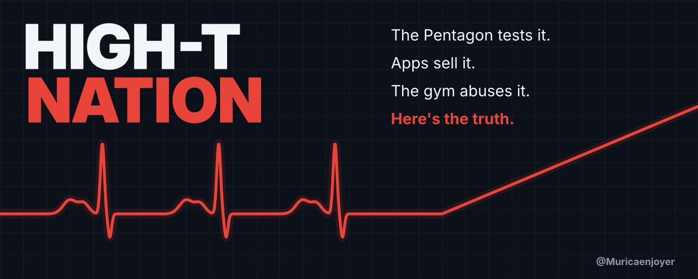
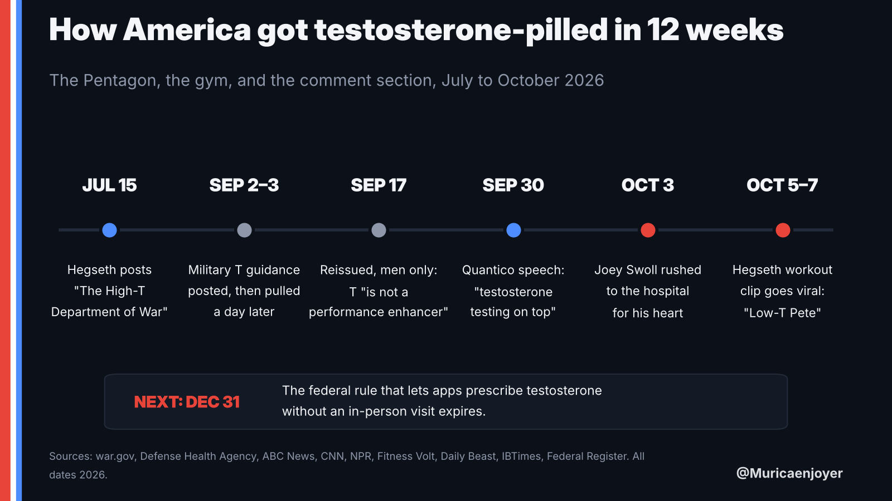
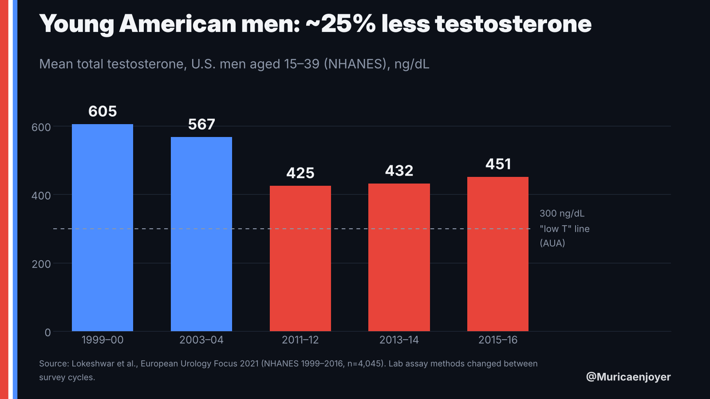
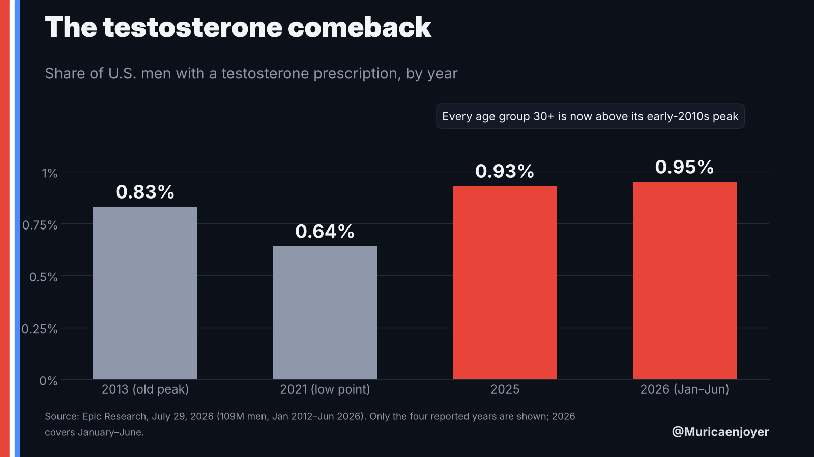
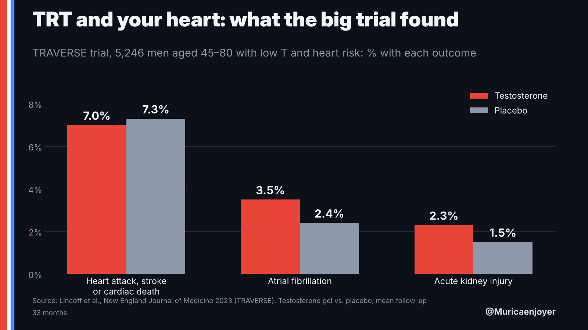
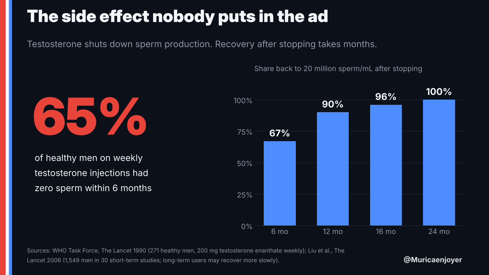
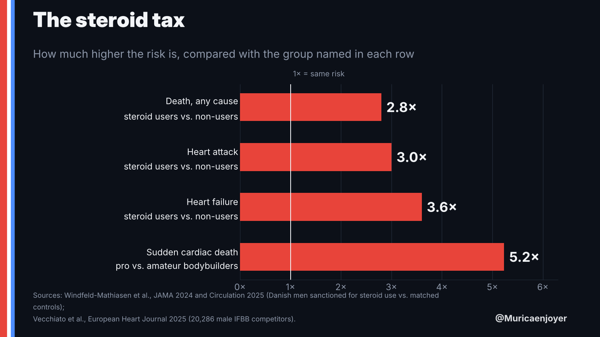

The pickAmerica's testosterone panic, told through the week it peaked.
The story: In twelve weeks the Pentagon started screening male troops for low T. Its own doctors then wrote that testosterone "is not a performance enhancer." Hegseth bragged about "testosterone testing on top" at Quantico. Joey Swoll landed in the hospital with his third heart scare since 2023. This week a clip of Hegseth lagging in a Marine workout went viral, and the internet named him "Low-T Pete."
The angle: Pro-man, anti-grift. The decline in T is real but smaller than the hype. The Pentagon, the telehealth apps and the gym are each selling a version of "more T." The evidence says real testosterone comes mostly from sleep, losing fat and lifting. TRT is a legitimate medical treatment with real trade-offs, not a performance drug. Roast every side equally, and the piece gets shared by every side.
Swoll's hospital post (Oct 5), the "Low-T Pete" clip (this week) and the State of the Force speech (Sept 30) are all still in people's feeds.
Every man who clicks is quietly wondering about his own number. A political story can't do that.
Hegseth fans, Hegseth haters, gym bros, Huberman listeners and doctors all have a stake, so quote-posts come from all sides.
Charts, public-domain Pentagon photos and embeddable viral posts. Six chart images are already made below.
Runners-up I considered
- AutoWarCom: America's robot army. Hegseth's proposed 12th combatant command for drones and AI, with Elon Musk co-directing a future-warfare study. Very "Murica," but less personal to the reader.
- The Hormuz gas bill. Gas averages $4.36 and diesel is near record highs four weeks before the midterms. Strong outrage potential, but it's crowded and it splits the audience.
Headlines & hook postsThe title shows on the article card. The hook post is the tweet that carries it into the feed.
Headline options
Hook posts
OutlineAbout 2,200 words, eight sections. Each slot names the image or embed that goes there.
- Cold open: the week America talked about testosterone~180 words
Open on the Low-T Pete clip, then Swoll's hospital-bed post, then "patriotic cowboys are in with testosterone testing on top." End the open with the question every reader has: is my T low, and should I care?
Header imageChart 5: timeline - The decline is real (and smaller than you've heard)~300 words
NHANES: young men's mean T fell from 605 to 451 ng/dL, with normal-weight men falling too. Add the Finnish and Boston data. Then debunk RFK Jr.'s "teens have less T than 68-year-olds." That debunk is what makes the rest of the piece credible.
Chart 1: decline - The Pentagon goes "High-T"~350 words
The July 15 video and memo covered about 2 million troops aged 30+, with no cost estimate. The guidance was posted Sept 2, pulled Sept 3 as "inadvertently" posted, and reissued for men only on Sept 17. The twist: it says testosterone "is not a performance enhancer." Add the doctors' pushback and the Endocrine Society's false-positive warning. Stay fair: screening symptomatic men is reasonable.
Embed @SecWar High-T postDVIDS Quantico photo - The gold rush~300 words
Prescribing is back above its 2013 peak. Prescriptions went from 7.3M to more than 11M. Hims launched low-T treatment (enclomiphene) at $99 to $199 a month. 72% of T-influencer accounts had money ties, and 0 of 46 posts cited evidence. HHS wants looser labels, and the online-prescribing rule expires Dec 31.
Chart 2: comebackPexels telehealth photo - What TRT does and doesn't do~300 words
TRAVERSE showed no excess heart attacks, but more atrial fibrillation. The FDA added a blood-pressure warning. Fertility gets shut down, and blood thickens. The real definition of low T is under 300 ng/dL plus symptoms, confirmed by two morning tests. A "low" number alone isn't a diagnosis.
Chart 3: TRAVERSEChart 6: fertility - The gym's open secret: "TRT" that's really a blast~350 words
Separate a medical replacement dose from enhanced use. Cover the bodybuilder mortality study (mean age at death 45, 38% sudden cardiac death) and the Danish data (2.8x deaths). Swoll, handled with care: wish him well, use his own "never claimed to be natural" words, and note that no cause has been disclosed.
Chart 4: steroid taxEmbed Swoll's post - How to actually raise your T~250 words
One week of 5-hour sleep cut daytime T by 10 to 15%. Dieting raised T by about 83 ng/dL on average, and bariatric surgery by about 250. Lift heavy. Get tested properly in the morning. If you're truly low with symptoms, TRT with a real doctor is legitimate.
DVIDS fitness-test photo - Close: real American T~150 words
High T isn't a vial. It's eight hours of sleep, a waistline and a barbell. Call back to Low-T Pete as a joke, not a diagnosis, then ask readers to follow and repost.
Sources list
ReceiptsEvery number to use, with a source. Items flagged "verify" came from secondary summaries; check them before publishing.
Is T actually falling?
- U.S. men aged 15–39: mean total T 605 → 451 ng/dL (1999–2000 to 2015–16), about −25%. Normal-BMI men fell too: 665 → 529. The low point was 2011–12 (425), with a slight rebound after; lab assays changed between survey cycles. Lokeshwar, Eur Urol Focus 2021 · Urology Times
- Boston men 45–79: about 1.2%/yr population decline independent of age (1987–2004). Travison, JCEM 2007 · Healio
- Finnish men aged 60–69: those born 1913–22 had 21.9 nmol/L, those born 1942–51 had 13.8. Perheentupa, EJE 2013
- RFK Jr. (Apr 2025): "A teenager today … has less testosterone than a 68-year-old man," and T has "dropped 50 percent." The best U.S. data show about 25%, not 50%. NBC News · Latin Times
The Pentagon's "High-T" program
- Jul 15: @SecWar posts "The High-T Department of War." The memo makes screening mandatory at the annual health assessment for troops aged 30+, optional under 30. Treatment stays optional. X post · NBC · Military Times
- About 2 million troops are 30+. There is no cost estimate and no named funding source. Center Square via Eurasia Review
- Sep 2–3: clinical guidance (including women) posted, then "temporarily rescinded." Adviser Tim Parlatore said it was posted "inadvertently." ABC · Military Times · CNN
- Sep 17: reissued for men only. It starts with a symptom questionnaire, then labs. The cutoff is 300 ng/dL, with blood drawn 0700–1000. It says testosterone "is not a performance enhancer." DHA · Federal News Network · Center Square
- 4 of 6 doctors consulted by Military Times saw no solid evidence that universal screening improves readiness. The Endocrine Society warned of "a high number of false positives." Military Times
- Sep 30: State of the Force at Quantico. Official transcript · NPR
- This week: clips of Hegseth trailing Marines in a Miramar workout go viral, and "Low-T Pete" spreads. It's an online taunt, not a diagnosis. Verify exact date Daily Beast · IBTimes · Raw Story
The gold rush
- Share of U.S. men prescribed T: 0.83% (2013 peak) → 0.64% (2021) → 0.93% (2025) → 0.95% (H1 2026). By age in 2025: 18–29 at 0.14%, 30–39 at 0.57%, 50–64 at 1.57%. Epic Research, Jul 2026
- U.S. testosterone prescriptions went from 7.3M (2019) to more than 11M (2024). IQVIA via CNBC
- Prescribing among adults 18–34 more than doubled from 2018 to 2026. Company blog Truveta
- Hims & Hers launched low-T care on Sep 10, 2025, with compounded enclomiphene (not testosterone) at $99 to $199 a month. Bloomberg · Hims
- Of 46 high-reach Instagram and TikTok T posts, 72% of the accounts had financial ties, 0 posts cited evidence and 31% of influencers claimed to be MDs. U. Sydney, Soc Sci Med 2026
- FDA (Feb 28, 2025) removed the heart-outcome language from the boxed warning and added a blood-pressure warning. FDA
- HHS (Jun 18, 2026) asked makers to drop the age-related low-T limitation from labels. This is a request, not yet final. HHS
- The DEA rule letting apps prescribe controlled drugs, including T, without an in-person visit runs through Dec 31, 2026. The final rule is under White House review. Federal Register · telehealth.org
What TRT does to your body
- TRAVERSE (5,246 men aged 45–80): heart attack, stroke or cardiac death was 7.0% vs 7.3% on placebo. Atrial fibrillation was 3.5% vs 2.4% and acute kidney injury 2.3% vs 1.5%. NEJM 2023
- Low T means total T under 300 ng/dL on two early-morning tests, plus symptoms. AUA guideline
- About 5.6% of men aged 30–79 have symptomatic deficiency, while about 29% of U.S. men have a "low" lab number alone. Araujo, JCEM 2007 · NHANES analysis
- 65% of 271 healthy men on weekly T injections had zero sperm within 6 months. WHO, Lancet 1990 After stopping, 67 / 90 / 96 / 100% recovered to 20M/mL at 6 / 12 / 16 / 24 months. Liu, Lancet 2006
- Guidelines say to stop or reduce T if hematocrit tops 54%. CMAJ
The gym and the heart
- 20,286 male IFBB competitors: 121 deaths, mean age at death 45, and 38% of deaths were sudden cardiac death. Pros had 5.2x the sudden-cardiac-death risk of amateurs. ESC / Eur Heart J 2025
- Danish men caught using steroids: 2.8% died vs 1.0% of controls over about 11 years, a hazard ratio of 2.8. Heart attack risk was about 3x and heart failure about 3.6x. JAMA 2024 · Circulation 2025 via Medscape
- Joey Swoll was hospitalized for his heart on Sat, Oct 3, and posted on Oct 5. No cause has been disclosed. He had "genetic irregularities" found in 2023, and an angiogram complication in 2024 turned into a roughly 6-hour procedure. He has said he has "never claimed to be natural." His post · Generation Iron · Fitness Volt
- Deaths with causes as reported: Shawn Rhoden, 46 (heart attack, 2021). Illia "Golem" Yefimchyk, 36 (reported heart attack, 2024). Gabriel Ganley, 22 (hypertrophic cardiomyopathy on the death certificate, toxicology pending, May 2026). Einar Méndez, 48 ("fulminant heart attack" per his wife, Sep 2026). Jo Lindner, 30, died of an aneurysm, not a confirmed cardiac death. TMZ · TMZ
What raises T for free
- One week of under 5 hours' sleep a night lowered daytime T by 10–15% in healthy men averaging 24 years old. Leproult & Van Cauter, JAMA 2011
- Losing weight raised total T by about 2.9 nmol/L (~83 ng/dL) on a low-calorie diet (about 10% weight loss), and about 8.7 nmol/L (~250 ng/dL) after bariatric surgery. More weight lost meant a bigger rise. Corona, EJE 2013 meta-analysis
- On lifting, use general claims only and no numbers. I didn't verify an effect size, so don't cite one.
QuotesVerbatim as reported by the linked outlet. Check the two flagged ones against the original.
"Not about artificial enhancement; it's about restoring and optimizing your natural capabilities, protecting your longevity, and ensuring you have the biological foundation required to sustain the fight."
Pete Hegseth, Jul 15, 2026 · NBC (some outlets render the ending "sustain and fight")
"The ideological clowns are out. The patriotic cowboys are in with testosterone testing on top."
Pete Hegseth, State of the Force, Sep 30, 2026 · war.gov transcript
Testosterone "is not a performance enhancer."
Defense Health Agency clinical guidance, Sep 17, 2026 · Center Square
"It's ridiculous to screen a population for a questionable condition which has a treatment with unproven benefits and proven risk."
Adriane Fugh-Berman, Georgetown · The Hill
"It's been a rough few days, I'm still here, but doing much better."
Joey Swoll, Oct 5, 2026 · his post Verify: some outlets drop "much"
"A teenager today, an American teenager, has less testosterone than a 68-year-old man."
RFK Jr., Fox News, Apr 2025 · Latin Times Use only to debunk
Charts I made for youSized for X (1600×900 inline, 1500×600 header). Each carries its source and your handle, so screenshots credit you. The PNG files are attached in the chat.







Photos & embedsU.S. government photos are public domain (credit the photographer, and don't imply endorsement). For anyone else's photo, embed the post rather than screenshotting it.
| Asset | Use it for | License / credit |
|---|---|---|
| @SecWar "The High-T Department of War" video | Section 3 embed, news peg #1 | Embed only |
| @TheJoeySwoll hospital update | Section 6 embed | Embed only. Never screenshot his hospital photo |
| DVIDS: Hegseth on stage, State of the Force | Section 3 photo | Public domain. "U.S. Navy photo by PO1 Eric Brann" |
| DVIDS: Quantico audience, wide | Alternate header (crops to 5:2) | Public domain. PO1 Eric Brann |
| war.gov: full State of the Force video | Clip the "testosterone testing on top" line and upload it natively | Public domain video |
| war.gov: "Pushups in the Snow" | Hegseth PT photo for the Low-T Pete beat | Public domain. PO1 Alexander C. Kubitza, DOD |
| DVIDS: Army Fitness Test sprint-drag-carry | Section 7, "earn it" | Public domain |
| DVIDS: Army lab blood draw | Section 3 or 5, testing | Public domain |
| Commons: testosterone molecule (3D) | Explainer graphic | Public domain (Ben Mills) |
| Commons: testosterone cypionate vial | Section 4 or 5 | Likely public domain (DEA image). Confirm on the file page |
| Unsplash: B&W barbell, no people | Section 6 (no faces near steroid talk) | Unsplash License |
| Pexels: online doctor consult | Section 4, telehealth | Pexels License |


Still to find on X: the most-viewed "Low-T Pete" workout clip. Search Hegseth workout Marines and sort by Top, then quote-post it. DVIDS may also have official stills: search "Hegseth Miramar" on dvidshub.net.
PromptsPaste the master prompt into Claude or Grok first, then use the follow-ups in the same chat. The master prompt contains the full fact sheet, so the model can't wander.
Writes the whole article in your voice, with image slots and sources.
You are ghostwriting a long-form X Article for @Muricaenjoyer ("Murica Enjoyer"), an American account with a confident, funny, gym-literate, pro-America voice. The audience is American men 18-45 who lift, follow fitness and politics on X, and hate being sold to.
TITLE: High-T Nation: The Pentagon, the Gym, and America's Testosterone Gold Rush
THESIS: America is in a testosterone panic. The decline in men's T is real but smaller than the hype. The Pentagon, telehealth apps and gym culture are each selling a version of "more T." The evidence says real testosterone comes mostly from sleep, losing fat and lifting, and TRT is a legitimate medical treatment with real trade-offs, not a performance drug. Pro-man, anti-grift. This is NOT a partisan hit piece: roast everyone fairly (Pentagon theater, app marketing, gym "TRT" that's really a blast) and give credit where due (screening symptomatic men is reasonable; TRT changes lives for men who are truly deficient).
VOICE: Short paragraphs (1-3 sentences). Punchy, plain American English. Dry humor, no cringe. Talk to the reader as "you." Confident but never sloppy with facts. No hashtags, no emojis in the body, no "in today's world," no "let's dive in," no "it's important to note." Every number gets a short inline source in parentheses, e.g. "(NHANES via European Urology Focus)."
STRUCTURE (about 2,200 words; use these as H2 headers, rewrite them punchier if you like):
1. Cold open: the week America talked about testosterone (~180 words). The "Low-T Pete" workout clip, Joey Swoll's hospital-bed post, Hegseth's "testosterone testing on top." End on the reader's real question: is my T low, and should I care? [IMAGE: timeline chart]
2. The decline is real, and smaller than you've heard (~300). [IMAGE: decline chart]
3. The Pentagon goes "High-T" (~350). [EMBED: @SecWar High-T post] [IMAGE: Quantico photo]
4. The gold rush (~300). [IMAGE: prescribing comeback chart]
5. What TRT does and doesn't do (~300). [IMAGE: TRAVERSE chart] [IMAGE: fertility chart]
6. The gym's open secret: "TRT" that's really a blast (~350). [IMAGE: steroid tax chart] [EMBED: Joey Swoll's post]
7. How to actually raise your T (~250).
8. Close: real American T (~150). End with a one-line call to follow and repost.
Then a "Sources" list with every source used.
FACTS YOU MAY USE (use only these; never invent or round differently):
- NHANES, U.S. men 15-39: mean total T 605 ng/dL (1999-2000) to 451 (2015-16), about -25%. Normal-BMI men also fell, 665 to 529. Low point 2011-12 (425), slight rebound after. Lab assays changed between cycles. (Lokeshwar et al., European Urology Focus 2021)
- Boston men 45-79: about 1.2% per year population decline independent of age, 1987-2004. (Travison et al., JCEM 2007)
- Finland, men 60-69: born 1913-22 had 21.9 nmol/L, born 1942-51 had 13.8. (Perheentupa et al., Eur J Endocrinology 2013)
- RFK Jr., Fox News, April 2025: "A teenager today, an American teenager, has less testosterone than a 68-year-old man," and T has "dropped 50 percent." Treat as an exaggeration: the best U.S. data show about 25%, and young men's averages remain far above 300 ng/dL.
- July 15, 2026: Hegseth's X video "The High-T Department of War." Memo: testosterone-deficiency screening is mandatory in the annual Periodic Health Assessment for active-duty and reserve troops 30+, optional under 30. Treatment is optional. Quote: "not about artificial enhancement; it's about restoring and optimizing your natural capabilities, protecting your longevity, and ensuring you have the biological foundation required to sustain the fight."
- About 2 million troops are 30+. No cost estimate or funding source has been named. The number screened is "not currently known."
- Sept 2, 2026: clinical guidance (including women) posted. Sept 3: "temporarily rescinded." Hegseth adviser Tim Parlatore said the draft was posted "inadvertently."
- Sept 17, 2026: Defense Health Agency reissued guidance for men only: symptom questionnaire first, labs only if positive, 300 ng/dL cutoff, blood drawn 0700-1000. It states testosterone "is not a performance enhancer" and that evidence does not support using it to improve energy, vitality, physical function or cognition. Guidance for women is still under review.
- The Endocrine Society said screening men over 30 "is likely to result in a high number of false positives." 4 of 6 doctors Military Times consulted saw no solid evidence that universal screening improves readiness. Georgetown's Adriane Fugh-Berman: "It's ridiculous to screen a population for a questionable condition which has a treatment with unproven benefits and proven risk."
- Sept 30, 2026, State of the Force at Quantico: "The ideological clowns are out. The patriotic cowboys are in with testosterone testing on top." Opinion outlets reported the line met silence.
- This week: clips of Hegseth trailing Marines during a workout at Miramar went viral, and critics dubbed him "Low-T Pete." Treat it as a joke, not a diagnosis.
- Share of U.S. men with a testosterone prescription: 0.83% (2013 peak), 0.64% (2021 low), 0.93% (2025), 0.95% (Jan-Jun 2026). Every age group 30+ is above its early-2010s peak. 2025 by age: 18-29 at 0.14%, 30-39 at 0.57%, 50-64 at 1.57%. (Epic Research, July 2026, 109M men)
- U.S. testosterone prescriptions: 7.3 million (2019) to more than 11 million (2024). (IQVIA via CNBC)
- Hims & Hers launched low-T care Sept 2025 with compounded enclomiphene (not testosterone) at $99-$199 a month.
- Study of 46 high-reach Instagram/TikTok testosterone posts: 72% of accounts had financial ties to products, 0 posts cited scientific evidence, 31% of individual influencers claimed to be MDs. (Social Science & Medicine 2026, Univ. of Sydney)
- FDA, Feb 2025: removed the cardiovascular-outcomes language from testosterone's boxed warning after the TRAVERSE trial, and added a class-wide warning that testosterone raises blood pressure.
- HHS, June 18, 2026: asked manufacturers to remove the label limitation on age-related low T (a request, not final).
- The DEA rule letting telehealth prescribe controlled substances, including testosterone, without an in-person visit runs through Dec 31, 2026; a final rule is under White House review. Testosterone is still Schedule III.
- TRAVERSE trial (NEJM 2023), 5,246 men aged 45-80 with low T and heart risk: heart attack, stroke or cardiac death 7.0% on T vs 7.3% placebo. Atrial fibrillation 3.5% vs 2.4%. Acute kidney injury 2.3% vs 1.5%.
- AUA definition of low T: total T under 300 ng/dL on two separate early-morning tests, plus symptoms. About 5.6% of men 30-79 have symptomatic deficiency (Araujo, JCEM 2007), while about 29% of U.S. men have a "low" lab number alone.
- WHO trial (Lancet 1990): 65% of 271 healthy men on 200 mg testosterone enanthate weekly had zero sperm within 6 months. After stopping, 67% / 90% / 96% / 100% recovered to 20 million/mL at 6 / 12 / 16 / 24 months (Liu et al., Lancet 2006).
- Guidelines: stop or reduce T if hematocrit exceeds 54%.
- Male IFBB bodybuilders (European Heart Journal 2025, 20,286 athletes): 121 deaths, mean age at death 45, 38% sudden cardiac death; pros had 5.2x the sudden-cardiac-death risk of amateurs. Autopsies often showed enlarged hearts.
- Danish men sanctioned for steroid use (JAMA 2024): 2.8% died vs 1.0% of controls over ~11 years (hazard ratio 2.8). Same cohort (Circulation 2025): heart attack risk ~3x, heart failure ~3.6x.
- Joey Swoll, a fitness creator in his 40s with millions of followers, was rushed to the hospital for his heart on Saturday, Oct 3, 2026, and posted Oct 5: "It's been a rough few days, I'm still here, but doing much better." No cause has been disclosed. In 2023 he revealed "genetic irregularities" with his heart; in 2024 a routine angiogram became a roughly 6-hour emergency procedure after a tool fragment broke off. He has said he has "never claimed to be natural."
- Bodybuilding deaths (cause as reported): Shawn Rhoden, 46, heart attack (2021). Illia "Golem" Yefimchyk, 36, reported heart attack (2024). Gabriel Ganley, 22, hypertrophic cardiomyopathy on death certificate, toxicology pending (May 2026). Einar Méndez, 48, "fulminant heart attack" per his wife (Sept 2026).
- Sleep: one week of under 5 hours a night cut daytime T 10-15% in healthy men averaging 24 (Leproult & Van Cauter, JAMA 2011).
- Weight loss (Corona et al., Eur J Endocrinology 2013 meta-analysis): low-calorie diet (~10% weight loss) raised total T ~2.9 nmol/L (~83 ng/dL); bariatric surgery raised it ~8.7 nmol/L (~250 ng/dL); more weight lost, bigger rise.
HARD RULES:
- Never state or imply that Joey Swoll's heart problems were caused by steroids. Wish him well. You may say no cause has been disclosed, quote his "never claimed to be natural," and note the speculation in replies without endorsing it.
- "Low-T Pete" is a meme, not a diagnosis. Don't claim to know anyone's hormone levels.
- Do not quote Hegseth's "no fatties, no [slur]..." line.
- Don't call Jo Lindner's death cardiac; it was an aneurysm. Leave him out unless needed.
- Don't say the FDA "removed the boxed warning"; it removed the cardiovascular-outcomes language.
- No medical advice beyond: get tested properly (two morning tests plus symptoms) and see a real doctor.
- No numbers on resistance training's effect on T; describe it qualitatively.
OUTPUT: Title, a one-sentence dek, then the article in Markdown with H2 headers and the [IMAGE]/[EMBED] placeholders where listed, then "Sources." After the article, list the three sentences you're least sure about and why.
Use when one section is flat. Swap in the section number.
Rewrite section [NUMBER] only. Keep every fact and source exactly as in the fact sheet. Make the first line a hook someone would screenshot. Cut 15% of the words. Add one line of dry humor that punches up, not down. End the section on a line that pulls the reader into the next one. Show me two versions.
The first 3 lines decide whether people expand the article.
Write 5 alternative cold opens (max 120 words each) for this article, each with a different entry point: 1) the "Low-T Pete" clip, 2) Joey Swoll's hospital-bed post (respectful), 3) the Pentagon guidance that says T "is not a performance enhancer," 4) a $99/month app checkout screen, 5) a second-person scene: "You're 31, tired, and your feed is full of TRT ads." Each must end on the question: is my T actually low, and should I care? Rank them by likely click-through and explain the ranking in one line each.
For the tweet that carries the article.
Write 10 posts (each under 280 characters, no hashtags, max one emoji) to share this X Article. Mix these formats: stat stack (3-4 stacked facts), contrarian twist, warning label, question to the reader, meme callback ("Low-T Pete"). Every number must come from the fact sheet. Then write 8 alternative article titles under 70 characters. Mark your top 2 posts and top 2 titles and say why in one line each.
Run before publishing. A Community Note kills reach.
Act as a hostile, meticulous fact-checker writing a Community Note against this article. Go sentence by sentence. Flag: (a) any number not exactly matching the fact sheet, (b) any claim stronger than its source (e.g. correlation stated as cause, "removed the boxed warning," "testosterone has halved"), (c) anything that implies a real person uses steroids or has low T, (d) missing context a note-writer would add (assay changes in NHANES, TRAVERSE being in men 45-80, the HHS label change being only a request). Output a table: quote, problem, fix. Then give the corrected full text.
Pre-written answers for the first hour of comments.
Write short, confident, funny-but-civil replies (under 200 characters each, 2 per item) to these likely comments on the article: 1. "You just hate Hegseth." 2. "TRT changed my life, you're fearmongering." 3. "NHANES changed lab assays, the decline is fake." 4. "Joey Swoll is natty, delete this." 5. "Just lift and sleep bro is cope, my levels were 250." 6. "So the Pentagon shouldn't test anyone?" 7. "Source??" 8. "Microplastics/seed oils are the real cause." Use only the fact sheet. Where the commenter has a fair point, concede it first.
Repurpose for reach two days after the article posts.
Turn the article into a 10-post X thread. Post 1 is a standalone hook under 280 characters. Posts 2-9 each carry one surprising fact plus one line of take, and tell me which chart image to attach to which post (timeline, decline, comeback, TRAVERSE, fertility, steroid tax). Post 10 links back to the full article and asks for a follow. No hashtags.
If you want an alternate cover. Shows no real people, so there's no likeness risk.
Cinematic wide 5:2 editorial still life: an amber glass medication vial and a capped syringe resting on a black iron barbell plate in a dark empty gym, a thin glowing red ECG line crossing the frame, dramatic rim lighting, muted olive-drab and charcoal palette, photorealistic, no people, no text, no logos, generous empty space on the left for a headline.
Launch planOne post, then the phone goes down. Built around your own X rule.
- Post within a few days, while Swoll and "Low-T Pete" are still in people's feeds. Aim for 8–10am ET on a weekday.
- Cover: upload the header image. Length: keep it over 1,000 words; X has judged past cash prizes for Articles on that length plus verified impressions.
- One hook post with the article attached. Pin it to your profile.
- Phone down. The article does the work. If you want, take one look that evening and answer the best two comments. That's the launch.
- Later, optional: one chart per day as its own post linking back. Each one is one post, one sit.
- Be classy about Swoll. Don't tag him in a way that reads as a dunk. Wishing him well in the article helps the piece's credibility and protects you from a pile-on.